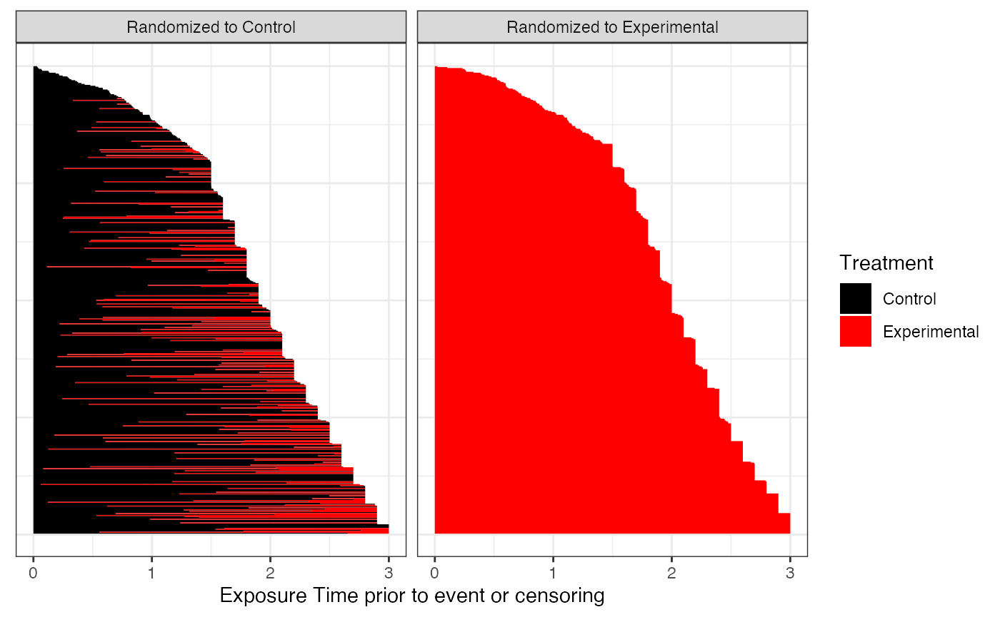
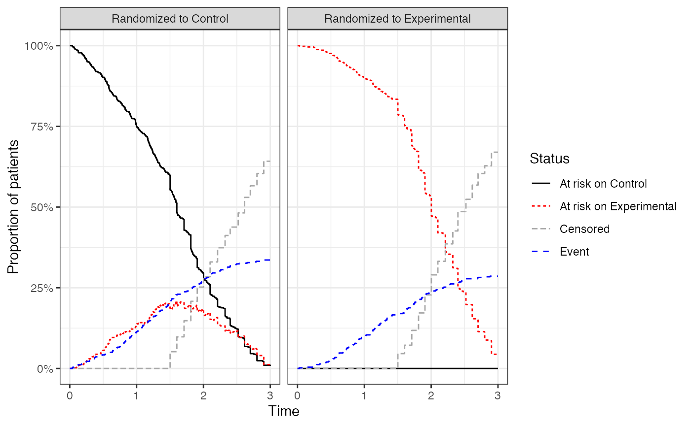
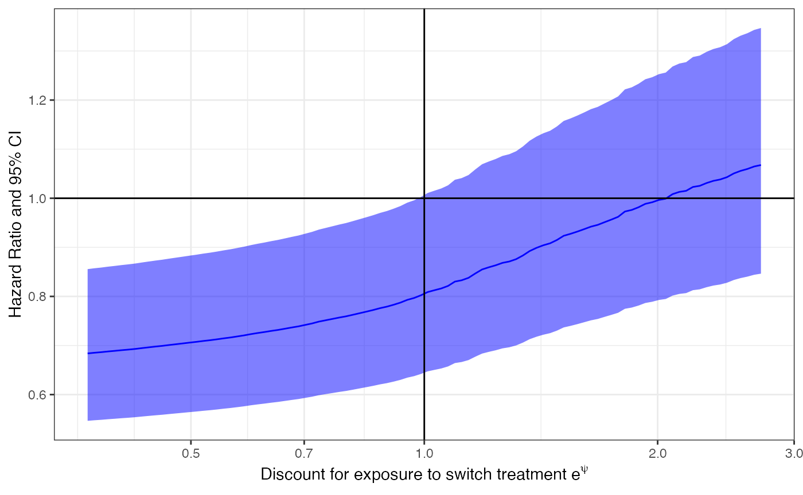
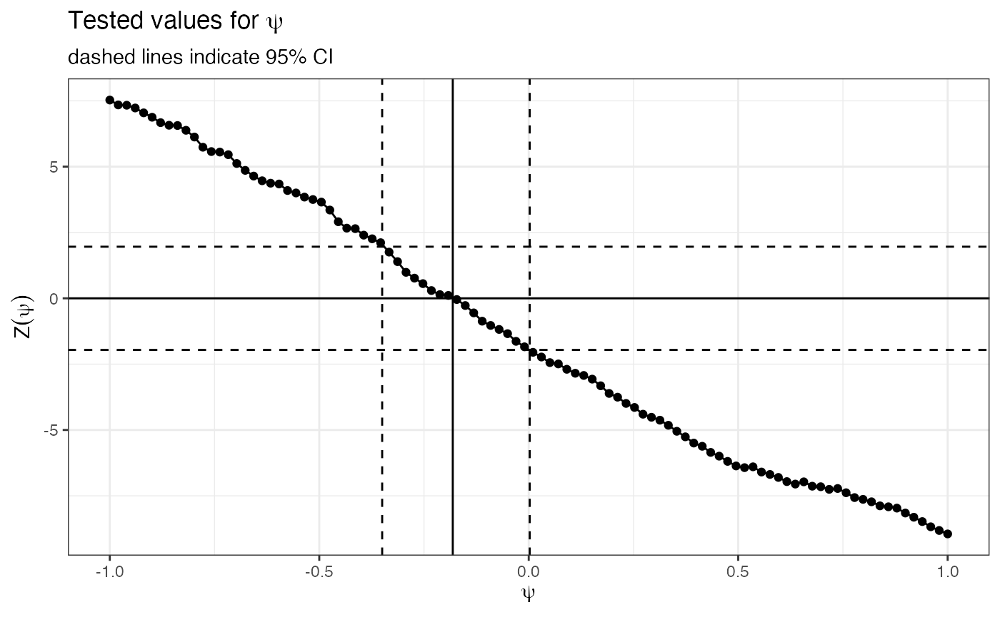
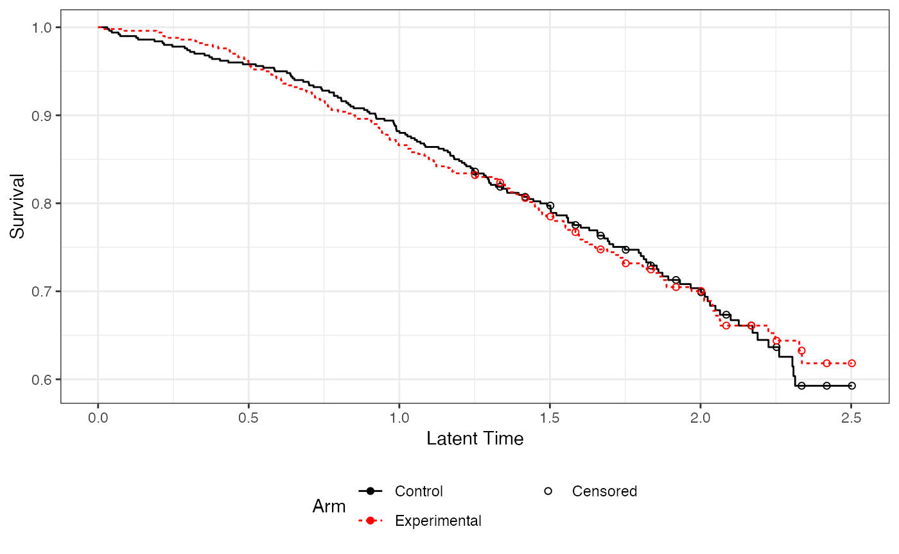
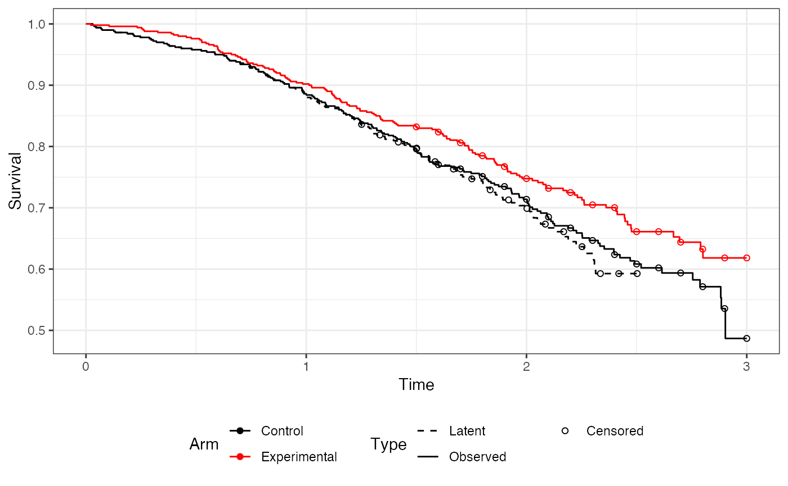

rpsftmPlus-vignette.RmdThis vignette gives a short introduction to the R-package rpsftmPlus. The package implements useful functionalities to create sensible default plots and reports of analysis performed using the rpsftm package.
The package can be installed using the following commands in the R console.
# install package from github devtools::install_github( 'Roche/Global-HTA-Evidence-Open', subdir = "Rpackages/rpsftmPlus" )
library(rpsftmPlus) #> Warning: replacing previous import 'rpsftm::cox.zph' by 'survival::cox.zph' when #> loading 'rpsftmPlus' library(rpsftm) library(survival) #> #> Attaching package: 'survival' #> The following object is masked from 'package:rpsftm': #> #> cox.zph library(ggplot2) library(dplyr) #> #> Attaching package: 'dplyr' #> The following objects are masked from 'package:stats': #> #> filter, lag #> The following objects are masked from 'package:base': #> #> intersect, setdiff, setequal, union library(reshape2)
We first need to derive time on experimental treatment and add to the data frame.
| id | def | imm | censyrs | xo | xoyrs | prog | progyrs | entry | rx |
|---|---|---|---|---|---|---|---|---|---|
| 1 | 0 | 1 | 3 | 0 | 0 | 0 | 3 | 0 | 1 |
| 2 | 1 | 0 | 3 | 1 | 2.653 | 0 | 3 | 0 | 0.1157 |
| 3 | 0 | 1 | 3 | 0 | 0 | 1 | 1.738 | 0 | 1 |
| 4 | 0 | 1 | 3 | 0 | 0 | 1 | 2.166 | 0 | 1 |
| 5 | 1 | 0 | 3 | 1 | 2.122 | 1 | 2.885 | 0 | 0.2643 |
Now we can fit an rpsftm model as in the repsftm documentation
These analysis are not related to the rpsftm analysis. They just use the rpsftm object as a useful way to capture information on survival and switching in a single object.
The first plot to review shows the exposure to experimental treatment in control arm prior to event or censoring. This assumes only a single switch per patient (either control -> experimental or experimental -> control respectively. Each line represents a single patîent.
ggexposure(imm.fit) #> Warning: `transmute_()` is deprecated as of dplyr 0.7.0. #> Please use `transmute()` instead. #> See vignette('programming') for more help #> This warning is displayed once every 8 hours. #> Call `lifecycle::last_warnings()` to see where this warning was generated.

The second plot to consider shows the patient status over time. These are mutually exclusive states. I.e. the total percent of patients at risk is the sum of patients at risk on control and experimental.
ggatrisk(imm.fit)

The plot data can be retrieved using the rpsftm.atrisk() function for tabulation.
rpsftm.atrisk(imm.fit, eval.times = c(0,1,2,3)) %>% dcast(Arm + Status ~ Time, value.var = "Count") %>% pander::pander()
| Arm | Status | 0 | 1 | 2 | 3 |
|---|---|---|---|---|---|
| Randomized to Control | At risk on Control | 500 | 375 | 147 | 4 |
| Randomized to Control | At risk on Experimental | 0 | 68 | 92 | 6 |
| Randomized to Control | Censored | 0 | 0 | 126 | 321 |
| Randomized to Control | Event | 0 | 57 | 135 | 169 |
| Randomized to Experimental | At risk on Control | 0 | 0 | 0 | 0 |
| Randomized to Experimental | At risk on Experimental | 500 | 451 | 267 | 22 |
| Randomized to Experimental | Censored | 0 | 0 | 114 | 335 |
| Randomized to Experimental | Event | 0 | 49 | 119 | 143 |
This plot allows an assessment of the impact of switching. It shows hypothetical results for different levels of discount. A flat line indicates no impact of switching on results while a sloping line indicates that the switch does affect the results.
ggdiscount(imm.fit) #> Warning: `data_frame()` is deprecated as of tibble 1.1.0. #> Please use `tibble()` instead. #> This warning is displayed once every 8 hours. #> Call `lifecycle::last_warnings()` to see where this warning was generated.

The following plots are useful to assess if an rpsftm model has converged.
This shows the evaluated values of psi in the g-estimation. For convergence should be a single root. In this case it appears fine.
ggpsi(imm.fit)

This shows the latent survival times for both arms. For convergence should be a overlapping per randomization. In this case it appears fine.
gglatent(imm.fit)

Assumming all diagnostics are fine and switching does impact the results can now look at the rpsftm results.
This shows the observed survival for both arms alongside the latent survial time for the control arm (as detected by rpsftm).
ggcfact(imm.fit)

This function fits a cox model comparing the observed experimental time to latent control time. Importantly it corrects the variance of the coefficient to account for the g-estimation procedure i.e. it inflates the variance based on the itt p-value.
rpsftm.coxph(imm.fit) %>% summary() #> Call: #> coxph(formula = rpsftm.formula(x), data = cfact.df) #> #> n= 1000, number of events= 285 #> #> coef exp(coef) se(coef) z Pr(>|z|) #> .arm -0.2633 0.7685 0.1376 -1.914 0.0556 . #> --- #> Signif. codes: 0 '***' 0.001 '**' 0.01 '*' 0.05 '.' 0.1 ' ' 1 #> #> exp(coef) exp(-coef) lower .95 upper .95 #> .arm 0.7685 1.301 0.5869 1.006 #> #> Concordance= 0.529 (se = 0.016 ) #> Likelihood ratio test= 4.72 on 1 df, p=0.03 #> Wald test = 4.72 on 1 df, p=0.03 #> Score (logrank) test = 4.74 on 1 df, p=0.03
This function refits an rpsft model with modified treatment effect in the control arm. This allows assessment of the sensitivity to the common treatment effect assumption.
# 50% efficacy for switchers imm.fit.s1 <- rpsftm.refit(imm.fit, k = 0.5) imm.fit.s1 %>% rpsftm.coxph() %>% summary() #> Call: #> coxph(formula = rpsftm.formula(x), data = cfact.df) #> #> n= 1000, number of events= 300 #> #> coef exp(coef) se(coef) z Pr(>|z|) #> .arm -0.2453 0.7825 0.1282 -1.914 0.0556 . #> --- #> Signif. codes: 0 '***' 0.001 '**' 0.01 '*' 0.05 '.' 0.1 ' ' 1 #> #> exp(coef) exp(-coef) lower .95 upper .95 #> .arm 0.7825 1.278 0.6086 1.006 #> #> Concordance= 0.528 (se = 0.015 ) #> Likelihood ratio test= 4.44 on 1 df, p=0.04 #> Wald test = 4.43 on 1 df, p=0.04 #> Score (logrank) test = 4.45 on 1 df, p=0.03
# 80% efficacy for switchers imm.fit.s2 <- rpsftm.refit(imm.fit, k = 0.8) imm.fit.s2 %>% rpsftm.coxph() %>% summary() #> Call: #> coxph(formula = rpsftm.formula(x), data = cfact.df) #> #> n= 1000, number of events= 292 #> #> coef exp(coef) se(coef) z Pr(>|z|) #> .arm -0.2688 0.7643 0.1404 -1.914 0.0556 . #> --- #> Signif. codes: 0 '***' 0.001 '**' 0.01 '*' 0.05 '.' 0.1 ' ' 1 #> #> exp(coef) exp(-coef) lower .95 upper .95 #> .arm 0.7643 1.308 0.5804 1.006 #> #> Concordance= 0.53 (se = 0.015 ) #> Likelihood ratio test= 5.1 on 1 df, p=0.02 #> Wald test = 5.1 on 1 df, p=0.02 #> Score (logrank) test = 5.13 on 1 df, p=0.02